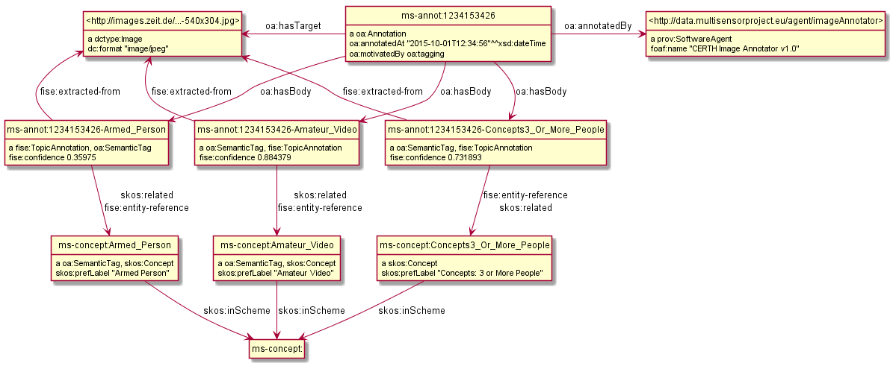
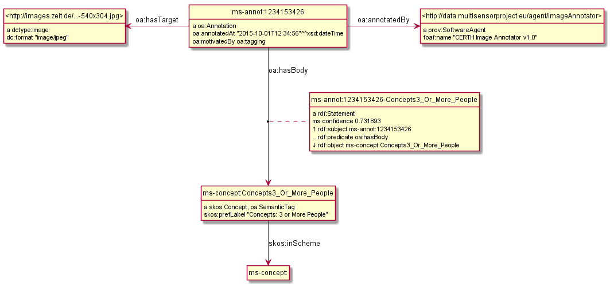
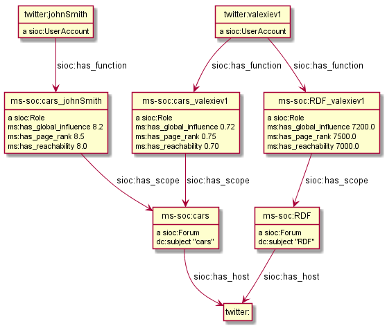
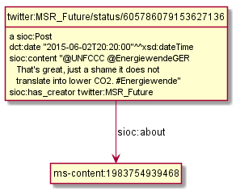

Materials related to FP7 Multisensor
Table of Contents
- Multisensor Linked Data: web presentation 2014-05-19, Barcelona
1 Linguistic Linked Data
There's been a huge drive in recent years to represent NLP data as RDF. NLP data is usually large, so does it make sense to represent it as RDF? What's the benefit?
- Ontologies, schemas and groups include: GRaF ITS2 FISE LAF LD4LT LEMON LIME LMF MARL NERD NIF NLP2RDF OLIA OntoLex OntoLing OntoTag Penn Stanford… my oh my!
- There are a lot of linguistic resources available that can be used profitably: BabelNet FrameNet GOLD ISOcat LemonUBY Multitext OmegaNet UBY VerbNet Wiktionary WordNet.
The benefit is that RDF offers a lot of flexibility for combining data on many different topics in one graph.
- Linguistic Linked Data: presentation, 2014-10-08, Bonn, Germany
- Zotero Linguistic LD bibliography
- Multisensor NER Mapping (html), (org): representing Named Entity Recognition in NIF and NIF Validation
- Integrating FrameNet in NIF
Issues I've found in NIF:
- Issue 1: nif:opinion vs marl:extractedFrom. Example: ./NIF-issue-1.ttl
- Issue 2: itsrdf vs fise properties. Example: ./NIF-issue-2.ttl
- Issue 12: location of NIF3.0 and issue tracker
2 MultiSensor NIF Representation
Examples (a few more are explained in Multisensor-NER-Mapping):
- ./NIF-example.ttl: NLP data in RDF (Turtle). Covers NIF (text binding), OLIA (linguistic properties), Penn (POS tagging), Stanford (dependency parsing), ITS20 (semantic annotation), NERD (entity extraction classes), Stanbol/FISE (multiple NLP tools/annotations per word/phrase), MARL (opinion/sentiment); and use of entities from DBpedia, WordNet, YAGO.
- ./NIF-example.ttl.html: syntax-highlighted with Emacs
- ./NIF-example.jsonld: same in JSONLD, shows that Turtle should be used for examples/discussion/QA and JSONLD for machine communication only
- ./NIF-example2.ttl: example of NER as produced by LT (doesn't yet include all fields from the NER Mapping above).
- ./NIF-example2.ttl.html: syntax-highlighted with Emacs
- ./NIF-example2.json: same in JSON-LD
- ./NIF-example3.ttl: Various kinds of Named Entities as per ./Multisensor-NER-Mapping.html
- ./NIF-example3.ttl.html: syntax-highlighted with Emacs
- ./NIF-example4.ttl: sentiment with MARL
- ./NIF-example4.jsonld: same in JSONLD
For FrameNet (relation extraction) representation see ./FrameNet/. The remaining sections describe specific representation issues (speech recognition, translation, multimedia)
2.1 Graph Normalization
The RDF_Storing_Service saves all data about a SIMMO in a named graph having the same URL as the SIMMO base URL. This makes it easy to get all data about the SIMMO. But it also leads to duplication of common triples. Eg consider this:
<http://multisensor.org/content/53a0938bc4770c6ba0e7d7b9ca88a637f9e9c30488#char=100,107> its:taIdentRef dbr:Germany. # Common triples dbr:Germany a nerd:Location; foaf:name "Germany"
If dbr:Germany appears 1000 times in SIMMOs, these common triples will be duplicated 1000 times.
This leads to extreme slowness of ElasticSearch indexing:
when adding the 1000th occurrence of dbr:Germany it indexes (the same) foaf:name "Germany" 1000 times,
i.e. storing time grows potentially quadratically with the number of SIMMOs.
The proposed fix is graph normalization: the storing service examines every triple <s,p,o>.
- If
shas the SIMMO base URL as prefix, the triple is stored in the SIMMO graph. - Otherwise, the triple is stored in the default graph.
This still saves common triples 1000 times, but there is no duplication since a triple can exist only once in a given graph.
2.1.1 Query Changes
The tradeoff is that you won't be able to get all SIMMO data by simply asking for a graph.
Eg query 2.3 Retrieve NEs (Select) is a bit sloppy, since it asks for certain types (and foaf:name) by graph, without looking for any relation:
SELECT DISTINCT ?ne ?type ?name { GRAPH <http://data.multisensor.org/content/53a0938bc4770c6ba0e7d7b9ca88a637f9e9c30488> { ?ne a ?type; foaf:name ?name FILTER (?type IN (dbo:Person, dbo:Organization, nerd:Amount, nerd:Location, nerd:Time))}}
If graph normalization is applied, we'd have to find the NEs by relation its:taIdentRef,
and get their common triples from outside the SIMMO graph:
SELECT distinct ?ne ?type ?name { GRAPH <http://multisensor.org/content/53a0938bc4770c6ba0e7d7b9ca88a637f9e9c30488> {[] its:taIdentRef ?ne} ?ne a ?type; foaf:name ?name FILTER (?type IN (dbo:Person, dbo:Organization, nerd:Amount, nerd:Location, nerd:Time)) }
(Actually this query also works before graph normalization since the part outside GRAPH {..} looks in all graphs, both SIMMO and default).
2.1.2 Normalization Problems
Moving common triples outside of the SIMMO graph raises two problems:
- If you examine the results of the query above, you'll see that some entities (eg
dbr:Facebook) have several labels, eg"Facebook, Inc."@en "Facebook"^^xsd:string
The reason is probably that different SIMMOs have different versions of the label, and different versions of the pipeline emit different literals ("en" language vs xsd:string). Both of these labels will be indexed in ElasticSearch for all occurrences of this NE. But the pipeline has emitted the labels globally (as
foaf:nameofdbr:Facebook) rather than locally (eg asnif:anchorOf), in effect asserting that both are globally valid labels of Facebook. So that's a correct consequence of the data as emitted. - If the last SIMMO referring to a global NE is deleted, that NE will remain as "garbage" in the common graph. But I don't think that is a significant problem, since the amount of such "garbage" won't be large, and since it is harmless.
Are the partners willing to make this change to the data model, and change their queries correspondingly?
2.2 TODO Speech Recognition
2.3 TODO Translation
Use case: we have original text in DE that is machine-translated to EN, then annotated with NER and other NIF annotations
- slide 16 uses itsrdf:target to point to target (translated) text of a nif:String, but you make furtter statements about the translated text
- slide 18 shows an idea how to represent translated text as an independent document, but uses a made-up property itsrdf:translatedAs
The OntoLex vartrans module suggests 5 ways to represent translation. But all of them put us firmly in OntoLex land:
- the senses in source and target language share a reference to a shared concept
- class vartrans:Translation with properties vartrans:source and vartrans:target pointing the source and target sense
- property vartrans:translation that points from source to target sense
- property vartrans:translatableAs that points from source to target lexical entry
- class vartrans:TranslationSet that points to a number of vartrans:member vartrans:Translation instances
Another option is to use PROV:
- prov:hadPrimarySource is the only property that mentions "translation"
- nif:wasConvertedFrom is a subprop of prov:wasDerivedFrom
2.4 TODO Multimedia Annotation
We have 2 services to integrate in this way:
- ASR which provide a raw text extracted from the video (speech recognition)
- And the Concept and Event detection which provides the list of the concepts with the degree of confidence.
So for these services, we have to extend the ontology of the SIMMO. Now we have something like the following one:
SIMMO
And we have to extend it for the multimedia content with something like this:
The idea is to process this information not simultaneously to the textual content. So to ensure the RDF graph of the multimedia content will be correctly linked to the existing SIMMO generated previously for the textual content, the right SIMMO reference should be provided. And we have to think that this information should be useful for the multimedia search. Then, we should be able to search for concepts that were detected in the images, in the videos, and/or in the video’s speeches. Please, could you confirm this is the approach to follow? And if yes, could you propose an RDF formalisation to represent and store the multimedia content in GraphDB?
2.5 Image Annotation
Look at this image:

NOTE: It's recommended to copy the images to an internal server, to ensure that they will be available in the future. If the above image disappears, any statements about its URL become sort of useless.
CERTH has software that can annotate it with heuristic tags and confidence, eg like this (many more tags are produced for this image):
Concepts3_Or_More_People # 0.731893 Amateur_Video # 0.884379 Armed_Person # 0.35975
We can represent this in RDF using various alternatives.
2.5.1 Open Annotation
The Web Annotation Data Model (also known as Open Annotation, OA) is widely used for all kinds of associating two or several resources: bookmarking, tagging, commenting, annotating, transcription (associating the image of eg handwritten text with the deciphered textual resources), compositing pieces of a manuscript (SharedCanvas), etc.
The OA ontology has gone through a huge number of revisions at various sites. To avoid confusion:
- The latest ontology is dated 2015-08-20 and is published at http://w3c.github.io/web-annotation/vocabulary/wd/. It's still a draft (some editorial text is missing), but the ontology is usable
- The master file is at https://raw.githubusercontent.com/w3c/web-annotation/gh-pages/vocabulary/oa.ttl
- The namespace URL http://www.w3.org/ns/oa serves an obsolete version
We represent image annotations as oa:SemanticTag:
- The image is the target, tags are (linked to)*bodies*
- The tags are expressed as
oa:SemanticTag. The construct of usingskos:relatedis doubtful and will likely be removed, but for now we'll use it - OA asks us to describe the nature of the relation as a specific oa:motivatedBy. In this case I picked oa:tagging.
- We state the nature of the resource as rdf:type dctype:Image, and its mime type as dc:format.
- We record basic creation (provenance) information.
Unfortunately OA has no standard way to express confidence, which is essential for this use case. I have raised this as https://github.com/restful-open-annotation/spec/issues/3. Above we use a custom property ms:confidence, and in further subsections I show other options.
2.5.2 Representing Confidence with Stanbol FISE
Apache Stanbol defines an "enhancement structure" using the FISE ontology,
which amongst other things defines fise:confidence.
We want to use fise:TopicAnnotation that goes like this:

As you see, it points to fise:TextAnnotation using dc:relation;
if you scroll to the top, you'll see that points further to the (textual) annotated resource (ContentItem):
we don't want that since we have image not text. But there are
also fise:extracted-from (dashed arrows) pointing directly to the resource.
The NIF+Stanbol profile shows the same idea of using fise:extracted-from directly:

We bastardize the ontology a bit:
- skip
dc:relation, as we don't havefise:TextAnnotation - skip
fise:entity-label, as it just repeats skos:prefLabel of the concept - skip
fise:entity-type, as it just repeats rdf:type of the concept - make a direct link
fise:extracted-fromto the content. TODO: this is redundant sinceoa:hasTargetalready points there. So we can skip it
The result is: ./annot-image-fise.ttl

2.5.3 Representing Confidence with FAM
The FusePoolP3 Annotation Model (FAM) has invesigated merging of OA, NIF and Stanbol FISE, and defines fam:confidence that we can use. Some links:
- https://github.com/fusepoolP3/overall-architecture/blob/master/wp3/fp-anno-model/fp-anno-model.md
- http://events.linuxfoundation.org/sites/events/files/slides/ApacheCon-Stanbol-FAM.pdf
- http://www.slideshare.net/linkedtv/linking-media-and-data-using-apache-marmotta-lime-workshop-keynote
- https://github.com/wikier/apache-marmotta-tutorial-iswc2014
We would use fam:TopicAnnotation: see a mapping from fise:TopicAnnotation to fam:TopicAnnotation. But because this results in an isomorphic graph structure, we don't show it here.
2.5.4 Representing Confidence with Reification
(IMPORTANT: Ignore this section, it's not needed now.)
A tried and true (although criticized by some) way of adding statements to relations is
RDF Reification that uses rdf:Statement, rdf:subject, rdf:predicate, rdf:object (a lot
more details in Practical RDF # Reification: The RDF Big Ugly at O'Reilly Safari. For
brevity we represent only one of the tags. It looks like this, but the diagram hides some
of the complexity so please see the turtle: ./annot-image-reif.ttl

2.6 Social Linked Data
SMAP is a MS module that does network analysis over social networks. It gets some tweets based on keywords or hashtags, and then determines the importance of various posters:
- ms:has_page_rank
- ms:has_reachability
- ms:has_global_influence: a comnbination of the two
2.6.1 Example: single keywords
- We crawled two sets of tweets based on two keywords: "cars" and "RDF"
- The first guy (
valexiev1) has posted on both topics. He knows a bit about "cars" but a lot about "RDF" - The second guy (
johnSmith) has posted only on the "cars" topic. He knows a lot about "cars".
(These names are completely random ;-).
Representation:
- We use a namespace
mssoc:where we put MS Social network data. - The RDF representation follows the SIOC ontology, complemented with MS properties where needed.
- Keywords are strings, so we use dc:subject to express them.
- The graph allows a journalist to compare the importance of the same poster across keywords
./SMAP-example.ttl (./SMAP-example.ttl.html is syntax highlighted):

2.6.2 Example: multiple hashtags
- We crawled one set of tweets based on multiple hashtags.
- We make the topic URLs by concatenating the sorted tags (a bit too long but works).
- We don't have the user names, only user IDs.
- Hashtags are resources (separately addressable), so we use dct:subject to express them
- We put each hashtag in a separate dct:subject. This would allow someone to analyze topic intersection.
./SMAP-example2.ttl (./SMAP-example2.ttl.html is syntax highlighted):

TODO:
- Decide whether to split into more coherent hashtag groups, and do separate analyses. Eg:
- energy_crisis.energy_policy.renewable vs
- dishwasher.homeappliances
- Decide whether and what named graphs to use. For now we'll use just one, with URL
mssoc:
2.6.3 Tweets Related to Article
Assume we can collect tweets related to a crawled article (SIMMO).
- Assume that "energiewende" is a major topic of SIMMO http://data.multisensorproject.eu/content/1983754939468 (this URL is made up and doesn't resolve)
- The tweet http://twitter.com/MSR_Future/status/605786079153627136 talks about #energiewende
We can express the tweet as sioc:Post. We'll express just basic data:
- sioc:content: "@UNFCCC @EnergiewendeGER That's great, just a shame it does not translate into lower CO2. #Energiewende"
- sioc:has_creator: http://twitter.com/MSR_Future (or if we don't have access to the user name, we can use the user id just like above).
- dct:date: posted on 2 Jun 2015 at 8:20 PM
TODO: it would be nice to extract the hashtags and mentions
./SMAP-tweet.ttl:

Possible extensions:
- If we start sourcing
Postsfrom other places (eg Facebook), we should link thePostandUserAccountto twitter: as asioc:Forumorsioc:Site. - If we want to express more diverse relations than a general
sioc:about, we can use OA (see 2.5.1) and oa:motivatedBy. The SIMMO will be the target of annotation, and the tweet is the body.